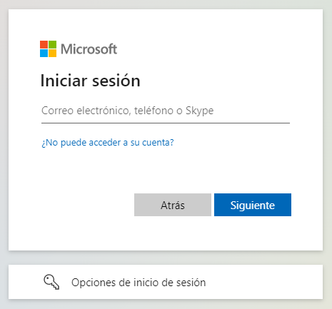

Todas las funcionalidades en este artículo están disponible solo en XavaPro
Desde XavaPro 7.1 puedes
configurar la identificación de usuarios para que use Azure AD, lo que te
permite usar
SSO (inicio de sesión único). De esta manera el
usuario se puede identificar una solo vez y acceder a todas las
aplicaciones XavaPro y a otras aplicaciones no XavaPro que también usen
Azure AD. Además, usar Azure AD te permite usar
autentificación en 2
pasos para tus aplicaciones XavaPro.
En la carpeta
Admin tienes un módulo llamado SSO para configurar
Azure AD:

Si marcas las casilla de Activado
y rellenas los demás campos con la configuración correcta de tu Azure AD
para tu aplicación, al identificarte tendrás un nuevo botón INICIAR SESIÓN
CON AZURE AD:

Si el usuario pulsa en INICIAR
SESIÓN CON AZURE AD se le dará la opción de identificarse usando sus
credenciales de Azure:

Además, si el usuario ya
estuviera identificado en ese navegador accedería a la aplicación sin que
se le pidiera identificación. El usuario tiene que estar añadido a la
aplicación en la configuración de Azure AD. Para versiones anteriores a la
7.5, el usuario también debe estar registrado como usuario de XavaPro en
la aplicación con los roles correspondientes asignados, y el usuario debe
estar registrado en la aplicación XavaPro con el mismo nombre que en
Azure. A partir de la versión 7.5, los usuarios de Azure AD ya no
necesitan ser registrados manualmente en XavaPro. Cuando un usuario de
Azure AD se autentica contra la aplicación por primera vez, si no existe
en XavaPro, se registrará automáticamente. Si la aplicación tiene un rol
"azure ad" definido, este rol se asignará automáticamente al nuevo
usuario. Las nuevas organizaciones creadas a partir de la versión 7.5
tienen el rol "azure ad" creado por defecto, pero también se puede crear
manualmente si es necesario.
Configurar la aplicación en Azure AD
Si ya usas Azure AD en tu organización estarás acostumbrado a configurar
aplicaciones y asignar usuarios a ellos, tendrás claro, además, de donde
sacar los valores para el formulario de SSO de XavaPro. Pero si nunca has
usado Azure AD, no te preocupes, aquí te presentamos una guía para
registrar tu aplicación en Azure AD. Azure AD ofrece una capa gratuita
suficiente para tener SSO en tus aplicaciones XavaPro.
Panel de control de Azure AD
Una vez dado de alta ve a la
página principal de Azure, normalmente al identificarte entra ahí, sino ve
a
https://portal.azure.com/. Allí
pulsa en
Azure Active Directory:

Esto te lleva a la página de
administración de Azure AD:

Agregar aplicación en Azure AD
Supongamos que tenemos una
aplicación XavaPro llamada facturacion y queremos registrarla en
Azure AD, deberías seguir los siguientes pasos.
Primero, abre el menú Agregar
y pulsa en Registro de aplicación:

En la página
Registrar una aplicación que aparece, introduce
la información de registro de tu aplicación:
- En el campo Nombre, teclea "facturacion".
- En el apartado Tipos de cuenta compatibles, selecciona
"Solo cuentas de este directorio organizativo".
- En la sección URI de redirección, selecciona "Web" en el
combo e introduce la siguiente URL: http://localhost:8080/facturacion/sso/azure/redirect

Pulsa el botón
Registrar para crear la aplicación.
Crear secreto
En la página de administración de Azure AD, escoge la opción Registros
de aplicaciones en el menú de la izquierda. Esto te mostrará la
lista de tus aplicaciones, pulsa en facturacion.

En la pantalla de registro de la aplicación, haz clic en la pestaña
Certificados
y secretos a la izquierda para abrir la página donde podemos
generar secretos y cargar certificados. En la sección
Secretos de
los clientes, haz clic en
Nuevo secreto de cliente:

Escribe una descripción de la clave (por ejemplo, "secreto
aplicación"). Selecciona una de las duraciones de clave disponibles (6
meses, 1 año, 2 años o Nunca expira) según tus necesidades de
seguridad.

El valor de la clave generada se mostrará cuando pulses el botón Agregar.
Copia el valor generado para utilizarlo en los pasos posteriores.
Necesitarás esta clave más adelante para añadirlos a la configuración
SSO de tu aplicación XavaPro. Este valor de clave no se mostrará
nuevamente y no se puede recuperar de ninguna otra forma, así que
asegúrate de anotarlo desde el portal de Azure antes de navegar hacia
otra pantalla o pestaña.

Configurar la aplicación Azure AD en XavaPro
En Azure AD ve a Registros de aplicaciones y ahí escoge tu
aplicación, para ver su Información esencial. Después en tu
aplicación XavaPro abre el módulo SSO dentro de Admin y
rellena:
- Id del cliente en XavaPro con el Id. de aplicación
(cliente) de Azure AD.
- En Autoridad de XavaPro pone el prefijo
https://login.microsoftonline.com/ y añádele el Id. de
directorio (inquilino) de Azure AD.
- En Secreto de XavaPro añade el secreto aplicación que has
creado en el paso anterior y se supone te has apuntado.
Como sigue:

Marca la casilla de Activado y tu aplicación ya trabajará con
Azure AD. Recuerda dar de alta los usuarios en tu aplicación XavaPro
con los roles correspondientes, si no no te funcionará. Si haces esto
con otras aplicaciones XavaPro podrás identificarte la primera vez y
acceder a las demás aplicaciones sin identificarte, además puedes
activar la autentificación en dos pasos en tus usuarios desde Azure
AD.